2006.08.23., szerda
tomcat
blog
droidzóna
levrov
"Bors cica felfedezi a világot" címû képsorozatunk mai epizódjának fõszereplõje: Bors. Mellékszerepben Berta, aki már nem meri csóválni a farkát, mert ez a nyávogány lépten-nyomon rácsimpaszkodik. Technikai érdeklõdésû olvasók megfigyelhetik, mi a különbség egy Fuji Finepix S7000 és egy Canon EOS 350D között.
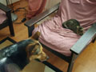
Bors kedvenc helye ez a fotel. Innen indul felfedezõ utakra.
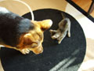
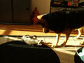
Ismerkedés a nappali szõnyegén
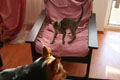
Bors közli, hogy a fotel az övé
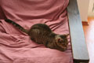
A nagy macskadilemma: a kutya, ugyebár, harap, de a legérdekesebb játék pont a kutya farka. Tehát azt valahogy le kell szedni a kutyáról.
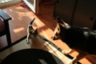
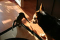
Támadás!
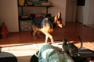
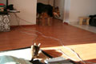
Berta kutya rémülten menekül. Igen, egy macska elõl. Egy kismacska elõl.
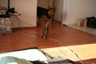
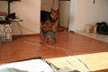
Bors hamarosan rájött, hogy nem kell Bertától egylépésnyire hirtelen rükvercbe váltania és pucolnia, nyugodtan meg lehet támadni ezt a nagy, bamba kutyát, aki pillanatnyilag azon morfondírozik, vajon mit ír elõ ilyen esetre a szolgálati szabályzat.
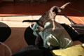
Addig is, amíg Berta a közlekedõfolyosón lapított, Bors kezelésbe vette a nagylábujjamat
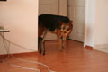
Aztán elment felfedezni. Berta óvatosan kitért az útjából.
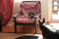
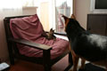
Késõbb kiújultak a harcok a fotel birtoklásáért
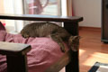
Támadás elõtti arckifejezés
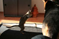
VÁ!
(Háttérben a Szakállas Bácsi-díj.)
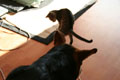
Macskatámadás
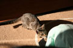
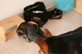
A legérdekesebb játék persze a párna és a bakancsom
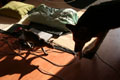
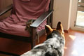
Berta kíváncsi természet, próbálja megszaglászni ezt a kis teremtményt, aki a hétköznapi életben megszokott dolgok ellenére pofátlanul õt kergeti, és nem fordítva
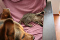
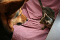
A fotel pedig Borsé, és kuss! E képek elkészültekor egyébként Berta már nem mert tíz centinél messzebbre húzódni tõlem.
Bors cica továbbra is gazdát keres, de esetleg Athinát is be lehet fogadni. Utóbbit csak macskamentes helyre, mert ma reggelre megutálta a macskákat. Különösen a lánymacskákat. Ja, és allergiás is.
Ennyit már a kis családunk életébõl, a fontos dolgokat ma a Droidzónában találhatjátok.